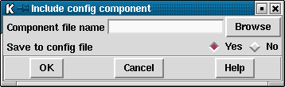

A "Component" in pregap4 is a predefined section of a pregap4 configuration file. It will generally be used to add on complex configurations which are not easily created using the GUI. Currently there are only two predefined components, both of which specify a naming scheme and so are easiest loaded using the Load Naming Convention function; see section Pregap4 Naming Schemes.

The "Include Config Component" command in the File menu is used to load a component. The "browse" button will bring up a file browser listing the default pregap4 component directory, however components can be loaded from elsewhere if desired. The "Save to config file" query determines whether the component is also copied to the current pregap4 configuration file to make this component the default for subsequent pregap4 runs.
Note that a component may have a configuration section listed within it. If this is present the component will replace any configuration with the same section name.